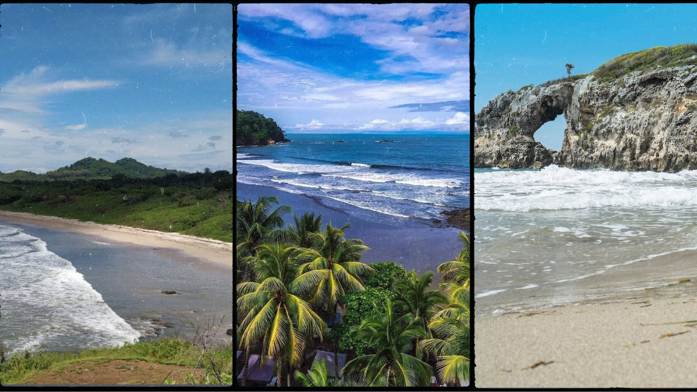
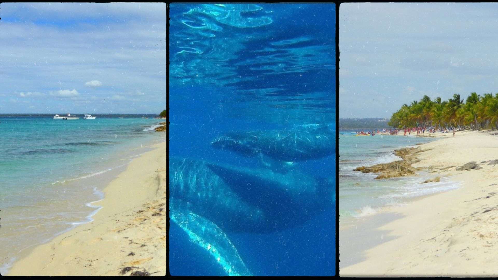

GUANACASTE · COSTA RICA
Seguí la costa. Encontrá tu lugar.
Playas para surfear y bajar el ritmo, naturaleza para explorar y planes para conocer la zona con otra mirada.
Ver condiciones y cámaras ↗IDEAS PARA SALIR
Elegí el próximo plan.

PLAYAS
Playa Ventanas
Una costa más tranquila cerca de Playa Grande. Consultá el acceso local antes de salir.
Abrir mapa ↗
PLAYAS
Playa Avellanas
Un destino conocido por el surf y su ambiente relajado; revisá mareas y transporte del día.
Abrir mapa ↗
PLAYAS
Playa Conchal
Aguas claras y una costa distinta; planeá el acceso con tiempo y llevá agua.
Abrir mapa ↗
NATURALEZA
Llanos de Cortés
Una escapada a una cascada amplia; verificá condiciones de camino y acceso antes de viajar.
Abrir mapa ↗
NATURALEZA
Islas Catalinas
Una opción popular para snorkeling en bote. Coordiná con un operador local y consultá el mar.
Abrir mapa ↗